Miner’s sledge
Cave & Mine
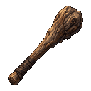
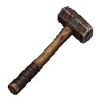

Cave & Mine


Goblin Territory
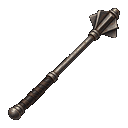
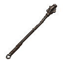
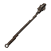
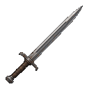 | Surveyor’s Shortsword | The existing sword belongs to the founder. Keep the proposed ordinary shortsword separate. |
|---|---|---|
| Quarry Hammer | Adopted for the actual Miner's sledge in the tool rack. | |
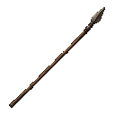 | Shaft Spear | The live Ash-shaft spear already has this narrow profile. |
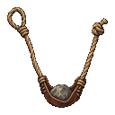 | Miner’s Sling | No corresponding live sling base. |
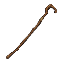 | Hazel Walking Staff | No corresponding live walking-staff base. |
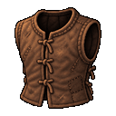 | Waxed Work Jerkin | The live Patched leather jerkin already has this silhouette. |
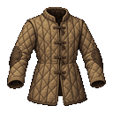 | Quilted Work Coat | Hold. The live description specifies sleeveless quilting. |
| Riveted Mining Coat | No corresponding live plate-reinforced mine coat. | |
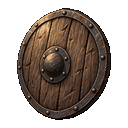 | Pit Shield | The existing Iron-rimmed buckler now has a dedicated round shield. |
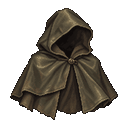 | Survey Cape | Hold. A short hooded cape differs from the live Oilcloth cloak. |
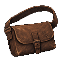 | Prospector’s Satchel | The live Leather satchel already uses this bag. |
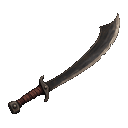 | Notched Falchion | The live Goblin cleaver uses this picture. |
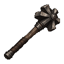 | Gatebreaker Mace | Keep the heavier concept. The actual Light mace receives its own narrower variant. |
| Garrison Spear | The live Boar spear already has the related crossbar adaptation. | |
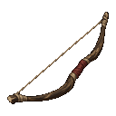 | Sentry’s Shortbow | No corresponding live weapon base. |
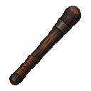 | Cinderwood Baton | No corresponding live weapon base. |
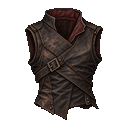 | Raider’s Leather Vest | No exact asymmetric vest base. The studded variant is already used separately. |
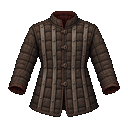 | Riveted Guard Coat | Hold. The live Studded jerkin has a dedicated sleeveless icon. |
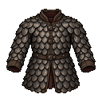 | Garrison Scale Coat | Hold. The live scale shirt has a shorter dedicated icon. |
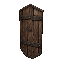 | Gate Guard’s Shield | Hold. The live goblin shield is round and has a dedicated icon. |
| Raider’s Mantle | The live Shadow-dyed cape uses this picture. | |
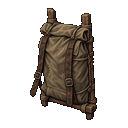 | Quartermaster’s Pack | The existing Miner's frame pack is already pictured and remains a Cave & Mine base. |